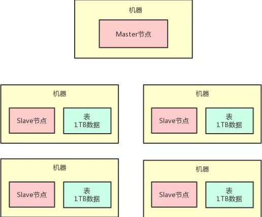
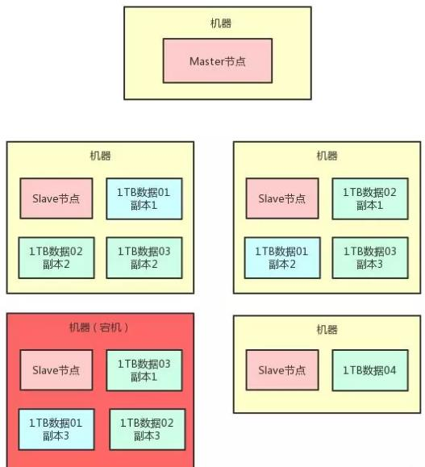
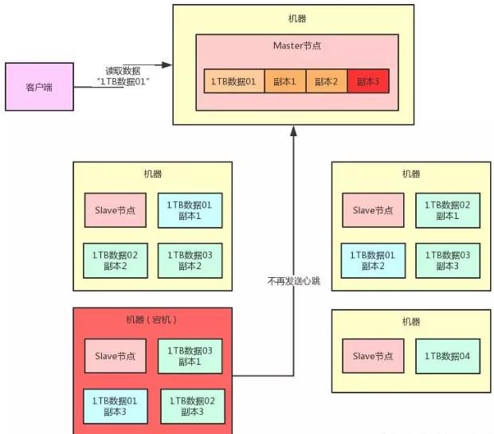
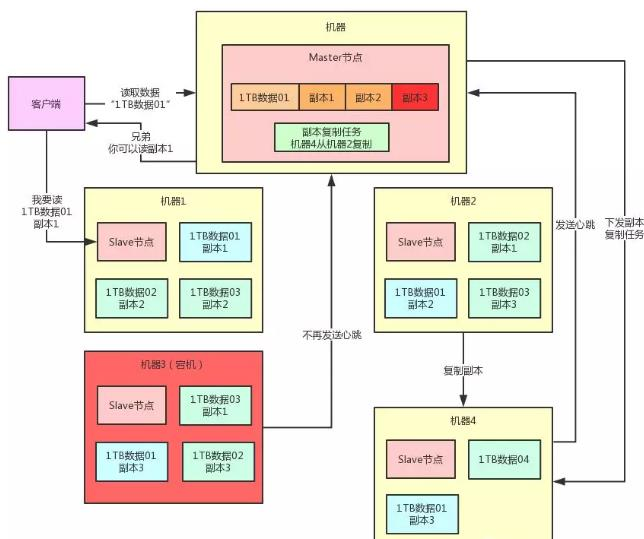
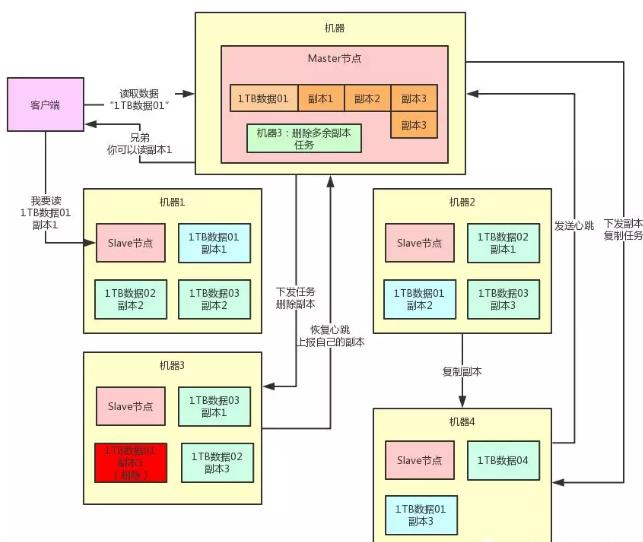

分布式存储容错架构
分布式存储
- 假如有一个超大的数据集，几百TB,用一台数据库服务器可能根本都放不下。
- 可以搞20台机器，每台机器上就放1/20的数据。
- 把一个超大的数据集拆分成多片，给放到多台机器上去，这就是所谓的分布式存储。
分布式存储系统
- 把一个超大数据集拆分成多块，然后放到多台机器上来存储，接着统一管理这些分散在多台机器上存储的数据的一套系统。
- 比如说经典的hadoop就是这类系统，然后fastdfs也是类似的。
- 类似elasticsearch、redis cluster等等系统，他本质都是如此。
- 分布式存储系统，有两种进程：
- Master节点，就在一台机器上，负责统一管控分散在多台机器上的数据。
- Slave节点，每台机器上都有一个Slave节点，负责管理那台机器上的数据，跟Master节点进行通信。

某台机器宕机了呢？
- 可以给每一台机器上的那1TB的数据做2个副本的冗余，放在别的机器上，然后呢，万一说某一台机器宕机，其他机器上还有他的副本。
- 假设有一台机器宕机了，必然会导致“1TB数据01”这个数据分片的其中一个数据副本丢失。
- 有人要读取数据，完全可以从另外两台机器上随便挑一个副本来读取就可以了，数据不会丢的。

Master节点如何感知到数据副本消失？
- 每台机器上负责管理数据的Slave节点，都每隔几秒给Master节点发送一个心跳。
- 一旦Master节点发现一段时间没收到某个Slave节点发送过来的心跳，此时就会认为这个Slave节点所在机器宕机了，那台机器上的数据副本都丢失了，然后Master节点就不会去读那个丢失的数据副本。

复制副本保持足够副本数量
- 我们预设的是每个数据分片都得有3个副本的。
- Master节点一旦感知到某台机器宕机，就能感知到某个数据分片的副本数量不足了。
- 会生成一个副本复制的任务，挑选另外一台机器来从有副本的机器去复制一个副本。
- 当机器4发送心跳过去的时候，Master节点就通过心跳响应把这个复制任务下发给机器4，让机器4从机器2复制一个副本好了。

删除多余副本
- 如果说此时机器3突然恢复了，他上面也有一个“1TB数据01”的副本3，相当于此时“1TB数据01”就有4个副本了。
- 一旦Master节点感知到机器3复活，会发现副本数量过多，此时会生成一个删除副本任务。
- 在机器3发送心跳的时候，下发一个删除副本的指令，让机器3删除自己本地多余的副本就可以了。这样，就可以保持副本数量只有3个。
